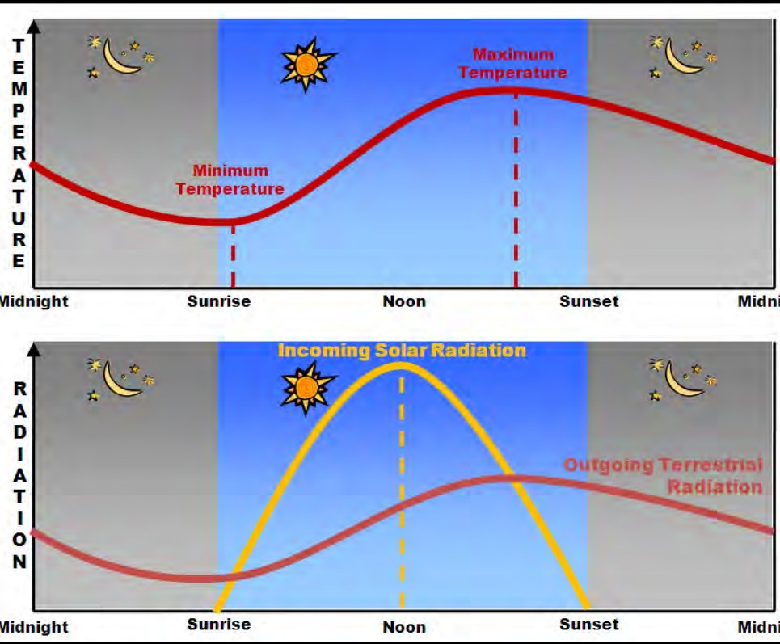
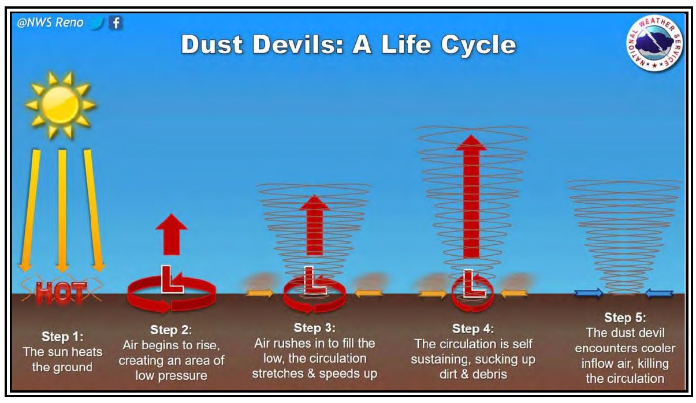
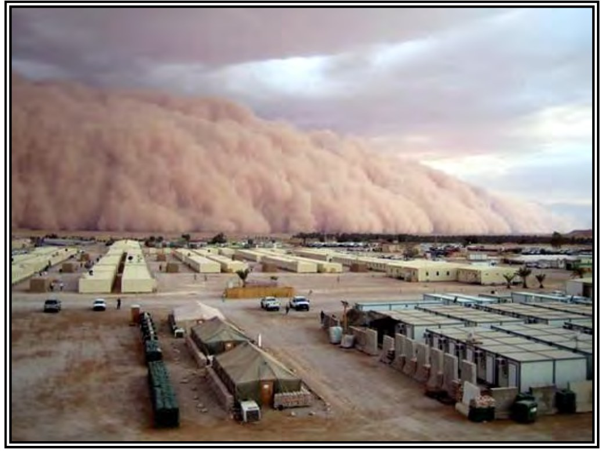
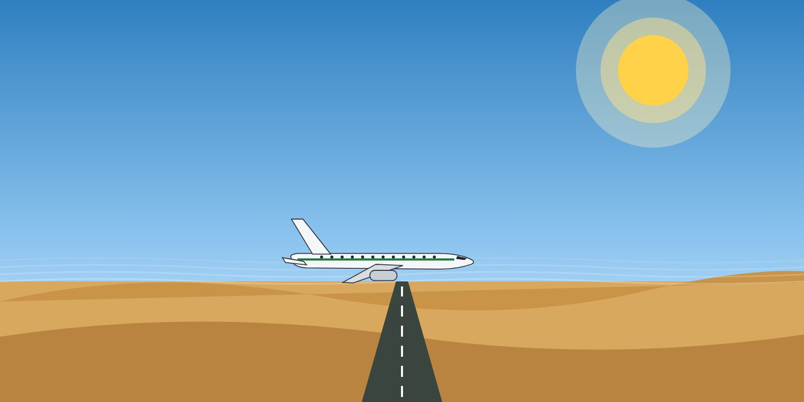

Summer and hot weather operations for all fleets: meteorology, density altitude and performance, take-off planning, brake energy, engines, obstacles, MEL, CRM, situation awareness, human performance and safety trends.
11 lessons · 3 modules · about 1.5 hours
Training material only. It does not replace the Aircraft Flight Manual, FCOM, QRH, MEL or the Domestic Airlines Operations Manual, which always take precedence.
Describe how heat builds up during the day and in heat waves.
Explain how heating produces convection, thunderstorms, dust devils and dust storms.
Recognise the summer weather threats in the reports and forecasts.
Heating drives convection, dust devils and dust storms.
Heating and the daily cycle
Over land, the temperature peaks in the afternoon, well after noon, because the ground keeps absorbing more solar radiation than it loses. The hottest — and least dense — air, and the strongest convection, come in the afternoon and early evening.

The daily temperature cycle over land: maximum temperature in the afternoon, minimum around sunrise. Source: FAA Aviation Weather Handbook FAA-H-8083-28B, Figure 7-8 (public domain).
Heat waves
A heat wave is a period of several days with temperatures well above normal, often under a stationary high-pressure system.
Night temperatures stay high, so even early departures can be performance-limited. Plan for the actual temperature, not the seasonal average.
Watch the TAF for TX (maximum temperature) groups and check the take-off and landing time against the forecast peak.
Convection and thunderstorms
Strong surface heating creates rising thermals. With enough moisture and instability they grow into towering cumulus and cumulonimbus — with turbulence, windshear, microbursts, hail, lightning and sudden wind changes.
The thunderstorm life cycle: towering cumulus, mature stage with up- and downdrafts, dissipating stage with downdrafts. Source: FAA Aviation Weather Handbook FAA-H-8083-28B, Figure 22-2 (public domain).
Dust devils and dust storms
Over dry, hot ground, intense heating creates dust devils — small, strong whirlwinds that can affect aircraft on take-off and landing. Thunderstorm outflow can raise a wall of dust and sand — a haboob — that reduces visibility to near zero within minutes.

Dust devils: a life cycle — the hot ground heats the air, which rises and starts to rotate. Source: FAA Aviation Weather Handbook FAA-H-8083-28B, Figure 16-13 (public domain).

A haboob: a dust storm raised by thunderstorm outflow, approaching an airfield. Source: FAA Aviation Weather Handbook FAA-H-8083-28B, Figure 18-11 (public domain).
Summer threats in the reports
DU dust, SA sand, DRSA low drifting sand, BLSA blowing sand, SS / DS sandstorm / duststorm, PO dust devils.
TS, CB, TCU, gusts (G), and convective SIGMETs.
Regional threats for our network: hot, high southern aerodromes, sand and dust in the south, and convective weather in the north in summer.
Key takeaways
The hottest, least dense air is in the afternoon; heat waves keep nights hot too.
Heating drives convection: CB, windshear and microbursts.
Dust devils and haboobs can cut visibility in minutes.
Know the codes: DU, SA, DRSA, BLSA, SS/DS, PO, TS.
Knowledge check
When is the air temperature over land usually highest?
At noon
In the afternoon
At sunrise
At midnight
Answer: B. The ground keeps gaining heat until the afternoon; the maximum temperature comes after noon.
Module 1 · Weather and Performance
Lesson 02: Density Altitude and Aircraft Performance
Lesson 2 of 11 · about 9 min
Learning objectives
Define density altitude.
Explain how high temperature and elevation reduce thrust, lift and climb.
Relate indicated, true and ground speed on a hot, high runway.
Hot and high: less density, less thrust, longer distances.
Warm air is less dense
At the same pressure, warm air holds fewer molecules in the same volume than cold air. Density altitude is the altitude in the standard atmosphere at which the density equals the actual density: a hot day makes the aircraft perform as if it were much higher.
Effect of temperature on density: at equal mass and pressure, a warm air parcel takes more volume — fewer molecules per volume. Source: FAA Aviation Weather Handbook FAA-H-8083-28B, Figure 8-10 (public domain).
What high density altitude does
Less thrust or power — jets and turboprops alike (see Lesson 5: flat rating).
Less lift at a given true airspeed — the same indicated airspeed means a higher true airspeed and ground speed.
Longer take-off and landing distances and lower climb gradients.
High density altitude: the same aircraft needs a longer take-off roll and climbs more slowly. Source: FAA Aviation Weather Handbook FAA-H-8083-28B, Figure 8-15 (public domain).
Altitude and temperature together
Aerodrome elevation adds to the effect of temperature. A high-elevation aerodrome on a hot afternoon is the most demanding case: the take-off distance can be far longer than at sea level.
Take-off distance increases with altitude: the same aeroplane needs a much longer ground roll at 8,000 ft pressure altitude. Source: FAA Pilot's Handbook of Aeronautical Knowledge FAA-H-8083-25C, Figure 12-9 (public domain).
Remember
Indicated airspeed tells the wing what it needs; true airspeed and ground speed tell the runway, the tyres and the brakes what they will get. On a hot, high runway the ground speed is higher at the same V speeds.
Key takeaways
Density altitude = the standard-atmosphere altitude with the actual density.
Hot and high: less thrust and lift, longer distances, lower climb gradient.
Same IAS → higher TAS and ground speed: more runway, tyre speed and brake energy.
Knowledge check
What happens to the take-off distance on a hot day at a high aerodrome?
It decreases
It increases significantly
It stays the same
It depends only on the wind
Answer: B. Lower density reduces thrust and lift and raises the ground speed: distances increase.
Module 1 · Weather and Performance
Lesson 03: High Temperature Take-off Planning
Lesson 3 of 11 · about 9 min
Learning objectives
Identify the limits that determine the maximum take-off mass on a hot day.
Select thrust and configuration correctly with approved performance data.
Cross-check the performance calculation as a crew.

The lowest limit decides the take-off mass.
The take-off mass limits
The maximum take-off mass is the lowest of several limits. On hot days, the limits based on climb and energy usually become the limiting ones:
Limit
Why heat makes it critical
Field length (runway)
Longer acceleration and stopping distances
Climb (WAT — weight, altitude, temperature)
Lower one-engine-out climb gradient
Obstacle
Lower net flight path (Lesson 6)
Tyre speed
Higher ground speed at lift-off
Brake energy (VMBE)
More energy to absorb in a rejected take-off (Lesson 4)
Structural / MEL / maximum temperature
AFM maximum take-off temperature; MEL penalties (Lesson 7)
Thrust and configuration
Use approved data: company performance software, QRH or AFM tables, Jetplan — with the actual OAT, QNH, wind, runway condition and NOTAM distances.
Reduced (assumed temperature / derated) thrust is allowed only within the AFM and company limits; on a hot, limiting day full thrust may be required.
A higher take-off flap setting may shorten the runway required but reduces the climb gradient — the performance tool selects the optimum.
Bleeds-off / packs-off take-off can give a performance credit where the procedure is approved for your type.
Re-calculate if the temperature rises, the runway or intersection changes, or the mass changes after the load sheet.
Crew cross-check
One pilot calculates, the other checks independently: runway, intersection, temperature, QNH, wind, mass, flap, thrust and V speeds. Wrong temperature, mass or flap entries are recurring causes of tail strikes and degraded take-offs.
Fleet
Topic
Boeing 737-800
Dash 8-Q400 / Q200
Hot weather procedures
FCOM Supplementary Procedures — Adverse Weather, hot weather operation
AFM / AOM hot weather and high-temperature limitations
Engine and APU start limits
FCOM limitations (EGT); APU start on battery
AFM engine start and ITT limits; APU or ground power as installed
Bleeds-off take-off
Bleeds-off take-off procedure and performance credit (FCOM / QRH performance)
Bleed and pack settings for take-off per AFM performance charts
Performance
Company performance software, QRH performance tables, Jetplan
AFM performance charts or company software, Jetplan
Key takeaways
MTOM = the lowest of field, climb, obstacle, tyre speed, brake energy and other limits.
Approved data, actual conditions; full thrust when limiting.
Independent cross-check of every performance entry.
Knowledge check
On a hot day at an elevated aerodrome, which limits most often restrict the take-off mass?
Maximum zero fuel mass
Climb (WAT) and obstacle limits
Cabin altitude
Fuel tank capacity
Answer: B. Reduced climb gradient makes the climb and obstacle limits critical.
Module 2 · Aircraft Limitations
Lesson 04: Brake Energy Management
Lesson 4 of 11 · about 8 min
Learning objectives
Explain why brake energy is critical in hot weather.
Apply the brake energy limit and the brake cooling schedule.
Manage the rejected take-off and the turnaround with hot brakes.
Brake energy grows with the square of speed.
Energy grows with the square of speed
In a rejected take-off the brakes turn the aircraft's kinetic energy into heat. Because energy grows with the square of the ground speed, the higher ground speeds of a hot, high runway — and any tailwind or downhill slope — increase brake energy sharply.
Brake energy rises with the square of the ground speed. On a hot, high runway the same V1 means a higher ground speed — check the brake energy (VMBE) limit and the brake cooling schedule.
The limits
Maximum brake energy speed (VMBE): V1 must not exceed it. The performance tool checks it; it can limit the take-off mass.
Brake cooling schedule: after a landing or a rejected take-off, the AFM/FCOM gives the cooling time before the next take-off. In hot air, brakes cool more slowly.
Fuse plugs in the wheels melt to deflate a tyre before it bursts after very high brake energy. Keep away from the wheels after a high-energy stop.
Rejected take-off
Brief the reject criteria: at high speed, reject only for the events in your SOP (engine failure, fire, or the aircraft unsafe or unable to fly).
Use maximum braking (autobrake RTO where fitted) and reverse; stop on the runway centreline.
After a high-energy RTO: tell ATC, consider fire services, follow the brake cooling schedule and do not taxi back for an immediate take-off.
On the turnaround
Avoid riding the brakes during taxi: low, steady taxi speed and short firm brake applications.
Check the brake temperature indication where fitted before the next take-off.
Key takeaways
Brake energy ∝ speed²: heat and altitude raise it sharply.
V1 ≤ VMBE; respect the brake cooling schedule.
After a high-energy RTO: ATC, fire services, cooling time; keep clear of the wheels.
Knowledge check
If the ground speed at brake application is 10 % higher, the brake energy is about:
10 % higher
21 % higher
5 % higher
the same
Answer: B. Energy is proportional to speed squared: 1.1² ≈ 1.21.
Module 2 · Aircraft Limitations
Lesson 05: Engine Limitations and Hot Starts
Lesson 5 of 11 · about 8 min
Learning objectives
Explain flat rating and the EGT/ITT margin in hot weather.
Recognise and prevent hot and hung starts.
Apply engine and APU limitations on the ground in high temperatures.
Flat rating: the EGT margin shrinks as the temperature rises.
Flat rating and EGT margin
Engines are flat-rated: they give their rated thrust up to a certain outside temperature. As the OAT rises, the engine runs hotter to make that thrust, and the EGT / ITT margin shrinks. Above the flat-rating temperature, available thrust falls.
Typical flat-rating behaviour (illustrative): thrust is constant up to the flat-rating temperature while the EGT/ITT margin shrinks; above it, available thrust falls. Values per engine type: AFM/FCOM/AOM.
Hot and hung starts
Hot start: EGT/ITT rising fast towards or beyond the start limit. Hung start: the engine stabilises below idle and does not accelerate.
Hot air, a tailwind into the exhaust, low battery or air-start pressure, or a slow starter make them more likely.
Prevention: correct start sequence, adequate start air or electrical power, monitor the parameters and be ready to abort exactly as the QRH / AOM states.
On the ground in the heat
Keep ground running time and high thrust to a minimum; position into wind where possible.
APU limits (EGT, load) are also closer — use ground power and conditioned air where available.
Watch avionics and equipment cooling cautions on long ground times.
Key takeaways
Flat rating: thrust constant up to a temperature, EGT margin shrinking; above it thrust falls.
Hot and hung starts: know the signs and the abort procedure.
Minimise ground running; use ground power and conditioned air.
Knowledge check
What happens to the EGT/ITT margin as the outside air temperature rises?
It increases
It decreases
It stays the same
It only changes in cruise
Answer: B. The engine runs hotter to produce rated thrust in hot air: the margin shrinks.
Module 2 · Aircraft Limitations
Lesson 06: Climb Gradient and Obstacle Assessment
Lesson 6 of 11 · about 9 min
Learning objectives
Describe the one-engine-out take-off flight path and its segments.
Explain gross and net flight paths and obstacle clearance.
Assess performance-limited departures and the engine-out procedure.
The net flight path must clear every obstacle.
The one-engine-out take-off flight path
The certified take-off path assumes an engine failure at V1 and continues to at least 1,500 ft above the runway.
The second segment (gear up, take-off flaps, V2) is usually the most demanding: for a twin, the gross gradient must be at least 2.4 % (CS 25.121).
High temperature reduces the gradient — so the climb limit and the obstacle limit can restrict the mass.
Obstacle clearance uses the NET flight path (for twins, the gross gradient reduced by 0.8 %). High temperature lowers the gradient: the obstacle limit can restrict the take-off mass even on a long runway.
Obstacle clearance
The net flight path is the gross path reduced by 0.8 % for twins (CS 25.115). It must clear every obstacle in the departure funnel by at least 35 ft (CAT.POL.A.210).
The performance software uses the aerodrome obstacle data. A NOTAM about a new obstacle (crane) or a reduced runway changes the result.
Performance-limited departures
Brief the engine-out procedure (EOSID) if the company publishes one — it may differ from the standard departure.
Brief acceleration altitude, turn points and the return or take-off alternate plan.
In hot weather the all-engines climb is also lower — check SID climb gradients and noise procedures against the expected performance.
Key takeaways
Second segment is the critical one: twin gross gradient ≥ 2.4 %.
Net path = gross − 0.8 % (twin); clears obstacles by ≥ 35 ft.
Brief the EOSID; check obstacle NOTAMs and SID gradients.
Knowledge check
How much must the net take-off flight path clear obstacles by?
0 ft
35 ft
500 ft
1,000 ft
Answer: B. CAT.POL.A.210: at least 35 ft vertically.
Module 2 · Aircraft Limitations
Lesson 07: MEL and CDL in Hot Weather
Lesson 7 of 11 · about 7 min
Learning objectives
Identify MEL and CDL items that reduce performance margins.
Apply penalties and operational procedures correctly in high temperatures.
Decide whether to dispatch when margins are already small.
Combine every MEL and CDL penalty.
Items that cost performance
Performance penalties: some MEL items (for example anti-skid, a bleed or pack item, a thrust reverser, a spoiler) carry mass or V-speed penalties or require a longer runway.
CDL items (missing panels or seals) add drag: a climb-gradient penalty that matters most on a hot day.
Cooling items: a pack, avionics cooling or APU item can make a hot ground time very difficult.
Apply the procedure in full
Read every item in full, including the (M) maintenance and (O) operational procedures, placards and conditions.
Combine penalties: two "small" penalties together on a hot, high runway can make the take-off impossible at the planned mass.
Hot fuel is less dense: convert uplift with the actual density, and respect MEL fuel minimums.
Example from the company LOFT — B737-800, MEL 28-01-03-01
A main tank aft fuel boost pump may be inoperative provided that both main tank forward pumps operate normally; at the start of take-off the associated tank holds not less than 7,500 lb (3,402 kg); a minimum of 2,500 lb (1,134 kg) is maintained in that tank; and the pump is deactivated. Always use the current MEL — this example is for training only.
The dispatch decision
If the margins are already small, consider: a cooler departure time, an offload of payload or fuel (with a fuel stop if needed), another runway, or not dispatching. The commander has the final word.
Key takeaways
MEL/CDL items can add mass, speed or drag penalties — critical in heat.
Read (M) and (O) procedures in full; combine all penalties.
Small margins: cooler time, offload, other runway — or do not dispatch.
Knowledge check
Why are CDL items more critical on a hot day?
They make the cabin hotter
Their drag penalty reduces an already lower climb gradient
They increase fuel density
They are not relevant
Answer: B. CDL drag reduces climb gradient, which is already reduced by temperature.
Module 3 · Human Factors and Safety
Lesson 08: CRM in Performance-Limited Operations
Lesson 8 of 11 · about 7 min
Learning objectives
Apply CRM skills when performance margins are small.
Use briefings and callouts to share the performance picture.
Resist commercial and time pressure.
Both pilots know today's limiting factor.
Shared mental model
Both pilots must know what limits the take-off today (field, climb, obstacle, brake energy) and by how much.
Brief the critical items: V1 and reject criteria, engine-out procedure, acceleration altitude, return plan.
Communication and assertiveness
Any change — temperature, intersection, wind, mass — is announced and re-checked, not absorbed silently.
The PM monitors the performance-related callouts and speaks up if something does not fit (speed, runway remaining, rotation).
Use the company escalation: question → state the concern → propose an action → refuse if unsafe.
Pressure and decision-making
Performance-limited days create pressure to "make it work": offloading cargo, delaying, or changing runway costs time.
Use a structured decision model (for example: facts — options — risks — decision — review) and involve the dispatcher and the cabin crew.
A delayed, legal, safe departure is always the right outcome.
Key takeaways
Both pilots know today's limiting factor and margin.
Announce and re-check every change; speak up.
Use a decision model; resist commercial pressure.
Knowledge check
The temperature rises by 4 °C during the boarding of a performance-limited flight. What should the crew do?
Nothing, it is small
Announce it and recalculate the performance
Take off faster
Ask ATC
Answer: B. Any change to the inputs must be announced and the performance recalculated.
Module 3 · Human Factors and Safety
Lesson 09: Situation Awareness in Hot Weather Operations
Lesson 9 of 11 · about 7 min
Learning objectives
Maintain awareness of the environment, runway and performance margins.
Recognise the cues that the margins are being eroded.
Plan ahead for diversion, go-around and convective weather.
Perceive, understand, project.
The three levels
Perceive: actual OAT and wind, ATIS changes, NOTAMs, runway condition (sand, rubber, heat), cells on the radar.
Understand: what these mean for today's take-off and landing margins.
Project: what happens if the temperature rises further, a cell drifts onto the departure path, or the destination closes with dust.
Cues that margins are eroding
Slow acceleration on the take-off roll; slow climb after lift-off.
Rising temperature or a wind shift to a tailwind before departure.
Long float in the flare; higher ground speed than expected on approach.
Visibility trending down in dust; gust spreads increasing.
Plan ahead
Go-around: in hot, high conditions the climb is lower — brief the missed approach and its gradient.
Alternates: check that the alternate is not affected by the same dust or convective system.
Fuel: extra fuel for weather deviations and holding when convection is forecast.
Key takeaways
Perceive — understand — project.
Slow acceleration, tailwind shift, long float and falling visibility are warning cues.
Brief the go-around; choose an alternate outside the same weather.
Knowledge check
Which is a cue that take-off margins are being eroded?
A headwind increase
Slower than expected acceleration on the take-off roll
A lower temperature
A longer runway
Answer: B. Slow acceleration indicates less margin than planned.
Module 3 · Human Factors and Safety
Lesson 10: Human Performance Limitations in High Temperature
Lesson 10 of 11 · about 7 min
Learning objectives
Describe the effects of heat stress and dehydration on the body.
Explain their effect on attention, memory and decision-making.
Apply countermeasures for crews on hot days.
Thirst comes late: drink regularly.
Heat stress and dehydration
In hot flight decks and on hot aprons, the body loses water through sweat. Thirst comes late: by the time you feel thirsty you are already dehydrated.
Even mild dehydration (about 2 % of body weight) is associated with reduced concentration, slower reactions and more errors.
Signs: headache, fatigue, dizziness, irritability, dark urine; more serious: cramps, nausea, confusion (heat exhaustion, heat stroke).
Effects on performance
Attention narrows; monitoring and cross-checks suffer.
Working memory is reduced: more slips in data entry (performance, FMS, load sheet).
Decision-making becomes slower and more prone to bias; fatigue builds faster on long, hot duty days.
Countermeasures
Drink water regularly before and during the duty, even without thirst; limit caffeine and avoid heavy meals before flight.
Cool the flight deck early (ground air, APU, packs); use sun visors; dress for the heat on the walk-around.
Use checklists and cross-checks deliberately; tell the other pilot if you feel unwell.
Fatigue: report it through the company system (OM A FTL chapter).
Key takeaways
Thirst comes late; ~2 % dehydration already degrades performance.
Heat narrows attention, reduces memory and slows decisions.
Drink regularly, cool the flight deck, cross-check deliberately, report fatigue.
Knowledge check
When should crews drink water on a hot duty day?
Only when thirsty
Regularly, before and during the duty
Only after landing
Never in flight
Answer: B. Thirst comes late; drink regularly.
Module 3 · Human Factors and Safety
Lesson 11: Flight Safety Trends — Summer Season
Lesson 11 of 11 · about 8 min
Learning objectives
Review the flight safety events typical of the summer season.
Apply the prevention for each event.
Report events through the safety reporting system.
Stabilised approach — go around from a long landing.
Summer focus items
Event
Why it matters
Prevention
Runway excursion
High ground speed, long float, tailwind, sand on the runway
Stabilised approach to the aiming point; go around if a long landing develops
High taxi speed
Hot brakes, reduced margins, passenger injury
Company taxi speeds; short firm braking, never riding the brakes
Wrong flap, ZFW, fuel or temperature entries
Wrong speeds and trim: tail strike, degraded take-off
Independent cross-check by both pilots
Hard and bounced landings
Structural damage, injuries
Correct flare; bounced-landing technique; go around if in doubt; report
Turbulence and windshear near convective weather
Injuries, loss of control
Wide avoidance; seat belts on; windshear escape when required
Use of reverse and APU
Company reminder note
Apply the reminder note exactly as published
Reporting
Report events and near-misses through the safety reporting system, under a just culture.
Read the latest company safety notes and discuss them with the TRI/TRE before the summer simulator session (mandatory exercises: upset recovery, windshear, TCAS, EGPWS, pilot incapacitation).
Key takeaways
Runway excursions: stabilised approach, go around from a long landing.
Moderate taxi speeds; cross-check flap, ZFW, fuel and temperature entries.
Avoid convective weather widely; report every event.
Knowledge check
What is the safest action when a long landing develops after a floated flare?
Push the nose down
Go around
Use only reverse thrust
Extend more flap
Answer: B. If a long landing develops, go around.
Training material only. It does not replace the Aircraft Flight Manual, FCOM, QRH, MEL or the Domestic Airlines Operations Manual, which always take precedence.